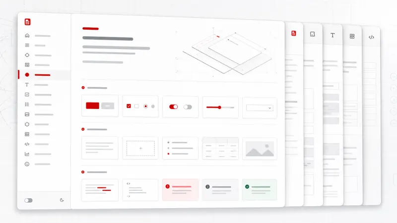

CHAPTER 01
7% PROGRESS
Philosophy
PHYSICAL-DIGITAL FUSION DESIGN SYSTEM
A tactile digital design language
A compact field guide for interfaces that feel precise, physical, and legible. It borrows the PDF-DS structure, then replaces the original material with local examples and project-specific notes.

DESIGN MOTIF
Layered document surfaces
precise controls
and a hardware-like index.
CHAPTER 03
CDN quick start and local fallback
Recommended link tag
<link rel="stylesheet" href="https://cdn.jsdelivr.net/gh/qpi-labels/PDF-DS@main/src/index.css">Fallback used here
The CDN file is requested first. If that request fails, this page switches to the copied backup at ./pdf-ds.backup.css.
<link
id="pdf-ds-source"
rel="stylesheet"
href="https://cdn.jsdelivr.net/gh/qpi-labels/PDF-DS@main/src/index.css"
onerror="this.onerror=null; this.dataset.fallback='true'; this.href='./pdf-ds.backup.css';"
>Loading server-side manifest.
The theme buttons write to local storage.
CHAPTER 02
System Architecture
Single-layer CSS architecture
The reference site presents PDF-DS as one stylesheet of tokens, utilities, and components. This local page follows that idea: external PDF-DS first, then a small project stylesheet for page-specific layout.
:root tokensspacing, color, type, elevation
Component classesbuttons, panels, inputs, tables
Utility classeslayout, sizing, typography, interaction
CHAPTER 04
Interactive spacing scale
SELECTED SPACING VISUALIZATION
--space-300
| Token | Role | Example use |
|---|---|---|
--space-300 |
Rhythm | Panel gaps and sidebar padding. |
CHAPTER 05
Typography
Typography Scale
Heading 72 (Display)PDF-DS System
Heading 32 (Title)Physical-Digital Fusion
Label 16 (UI Elements)System Architecture
Mono 14 / Mono 13JetBrains Mono / Data Label
CHAPTER 06
Achromatic color and theme simulator
LIGHT & DARK MODE
ACTION STATE
Double safeguard
A single destructive command is marked with functional red while neutral surfaces remain achromatic.
Contrast notes
The live site leans on exact reversals: light and dark modes share the same hierarchy, not separate decorative palettes.
CHAPTER 07
Materials
Base Panel
A plain bordered layer without exaggerated depth.
Control Container
The PDF-DS bevel gives independent controls a physical edge.
Active Surface
The active bevel reverses the highlight and shadow relationship.
CHAPTER 08
Components and morphing controls
Buttons
Forms & Inputs
Target sizing
48x48px target
<button class="pdf-btn-primary pdf-btn-sm">Primary</button>
<article class="pdf-panel">...</article>
<input class="pdf-input pdf-input-md">
CHAPTER 12
Asymmetric split screen
25:75 BLUEPRINT FORMAT
25%
CONTROL PANEL
Fixed navigation and system status.
CONTENT CANVAS
Scrollable document and examples.
CHAPTER 09
Forms
Input states
Use functional red with explanatory text for validation failure.
CHAPTER 10
Modals
DESTRUCTIVE ACTION
Delete project data?
This specimen shows a focused decision surface with a clear primary action and neutral cancel command.
CHAPTER 11
Navigation
Hierarchy cues
The active row uses a red left rail and red number block. Inactive rows stay gray so the current chapter remains unambiguous.
CHAPTER 13
Mobile bottom sheet navigation
9:41
MOBILE SCREEN
Chapter index
On narrow screens, the navigator becomes a bottom sheet that can be opened from a fixed action button.
CHAPTER 14
Design QA checklist
| Item | Status | Owner |
|---|---|---|
| Loading manifest | WAIT | Server |
01 / 11